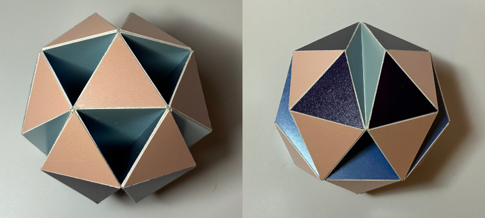
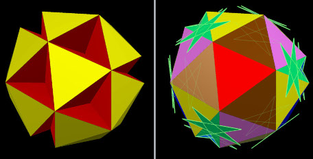
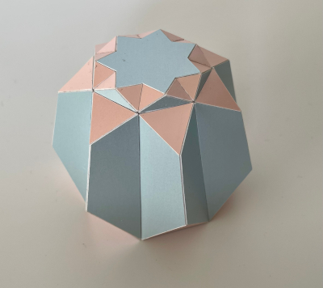

Polyhedra with Regular Heptagons
Contents
- Introduction
- Tri-Composites of Antiprisms
- Mason Greens's Supersemicupolae
- Augmentations with Prisms
- References
- Links
- Last Updated
Introduction
Polyhedra with regular heptagons (seven sided polygons) are not very common, except for polyhedra with a seven folded axial symmetry. On this page I gather a few that don't have the seven folded axial symmetry, although most are still based on prisms or anti-prisms, e.g. augmentations of Platonic solids using a prism.
Models
Tri-Composites of Antiprisms

In February 2026 I was experiment with heptagons and Jim McNeill pointed out the self augmented heptagonal antiprism on his page . When I analysed this model, I noticed that several faces will end up at the same spot if you rotate an n-gonal antiprism 120° around an axis through two opposite triangles. This way a new set up polyhedra can be defined. I refer to these as tri-composites of antiprisms, TCA in short. The one shown above is based on the regular heptagon. The symmetry of the polyhedron belongs to the algebraic group D3xI, which means there is a 3-fold symmetry axis, three mirror planes that share the axis and three half-turns, for which the axes are in a plane orthogonal to the 3-fold axis.
For the model on his website Jim McNeill excavated one whole ring of a base antiprism, while I only used with a compound of three antiprisms. For my model it means that one can continue adding antiprisms and hence one can find several triplets of edges that are lying in an regular heptagon. This is just a logical consequence of the general property for n-gonal antiprisms mentioned above. What is remarkable though is that the acute angles are equal to the angle of a {7/3} heptagram. This is something that Jim found and he mentioned that this only seems to happen for the heptagon, see the image below.

Mason Green's Supersemicupolae
It is obvious that regular heptagons will appear in polyhedra with 7-fold symmetry, but Mason Green's small supersemicupola and great supersemicupola, which he discovered in 2005, were a surprise for me and in 2025 I decided to build the paper models of them.

Especially the great supersemicupola, on the right, is a beautiful polyhedron I think. Mason came up with some rules to create similar polyhedra for different {m/n}-polygons, but apparently this fails for the {9}-gon, the enneagon. I tried to set up some other generalisation, which led to something I called roof top polyhedra. but didn't find anything for the enneagon either. I think these are really great finds by Mason Green.
Augmentations with Prisms

The image shown above shows a polyhedron consisting of 6 heptagon prisms attached to the faces of an imaginary cube. The nice thing here is that alternating colours can be used for the squares, since for each prisms one square is not shown. To my surprise is was not possible to divide the alternating colours such that one set of four vertices of a tetrahedron is shared by squares with the same colour. Naturally one could use any uniform polyhedron with squares as a base.

For instance the model above uses the truncated octahedron as a base. There is a difference with the previous model though. In the former heptagons of two opposite prisms are lying in one plane, which is not the case here. But as a result both models have the same symmetry, which is based on a tetrahedron, more specifically: A4 x I. This is a lower order symmetry than the base.

The model above does keep the S4 x I symmetry of the base, a rhombicuboctahedron, since the prisms are attached to the squares that share just a 2-fold symmetry axis, instead of a 4-fold as before. It is possible to attach the prisms in two ways: pointing towards the squares and pointing towards the triangles. The above shows the former. The latter will lead to intersecting prisms.
References
Links
Last Updated
2026-03-12